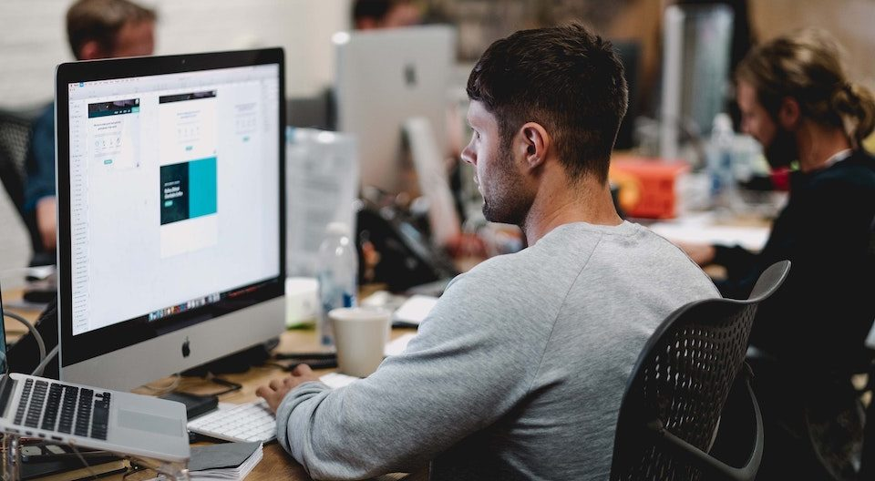

Pentingnya manajemen waktu
"Manajemen waktu bukan hanya tentang mencoba menyelesaikan tugas yang banyak dan cepat, melainkan juga tentang bagaimana menciptakan ruang untuk hal-hal yang benar-benar penting dalam hidup kita."

Sumber referensi:
Medcom OSC
Panduan Sukses untuk Menjalani Internship di Perusahaan Teknologi
"Menjalani internship di perusahaan teknologi merupakan pengalaman yang berharga dan berpotensi membuka pintu untuk kesempatan karir yang lebih besar di masa depan."

Sumber referensi:
Azura Labs